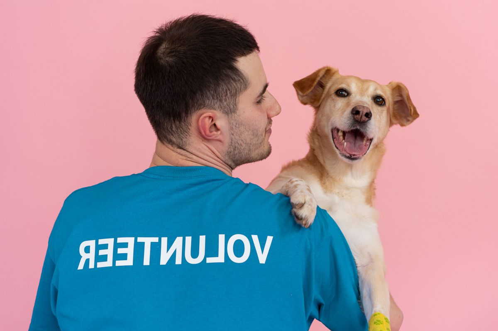

About Paws & Hope Animal Shelter
Paws & Hope is a community-based animal shelter established to rescue, rehabilitate, and rehome stray and abandoned animals in the local area. Since opening, the shelter has relied largely on word-of-mouth and a dedicated network of volunteers to operate and grow.
Our Mission
To rescue vulnerable animals, provide them with medical care and shelter, and find them safe, loving, permanent homes.
Our Vision
A community where no animal is left without care, food, or a home.
Our Team
Paws & Hope is run by a small core team of staff and a wide network of committed volunteers, including veterinary assistants, animal handlers, and administrators who work together to keep the shelter running every day.

Shelter Manager
Oversees daily operations, adoptions, and volunteer coordination.
Veterinary Assistant
Provides basic medical care and coordinates with local vets.
Volunteer Coordinator
Recruits and schedules volunteers for feeding, walking, and events.
Who We Serve
Our work reaches local animal lovers, potential adopters, donors, corporate sponsors, and volunteers who share our commitment to animal welfare.